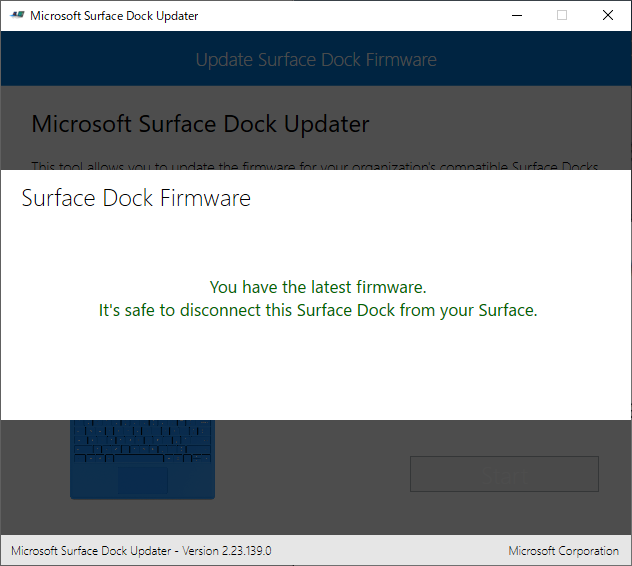

Surface Dock のファームウェアってアップデートできるんだって
公開日：
知らなかったんだけど、Surface Dock のファームウェアってアップデートできるらしい。
とくに不具合はないのだけど、うちのも買ってから結構経つし、何らかの改善があるかもしれない。――というわけで、試しにアップデートしてみた。
ちなみに、日本語のサポートページはこちら。
「Surface Dock Updater」のインストール
まず、Surface Dock のアップデートを行うツール「Surface Dock Updater」をダウンロード・インストールする。
いろいろダウンロードできるけど、必要なのは Surface_Dock_Updater_v2.23.139.0.msi だけみたい。

ウィザードにしたがってセットアップを完了すると――
スタートメニューに「Surface Dock Updater」が追加される。
「Surface Dock Updater」の実行
続いて、「Surface Dock Updater」を起動してファームウェアのアップデートを行う。途中で何回か PC から切断する必要はあるけど、Surface Dock の電源は切らないように。
まずは［Start］ボタンを押す。

ファームウェアのバージョンチェックが行われる。うちは最新版ではないとのこと。バージョンも書いておいてくれると親切なのだけど。
ファームウェアのアップデート処理には最大で7分ぐらいかかる。おしっこは先に済ませておいた方がよいだろう。

アップデートの開始。途中で切断しろと言われるけど、言われる前に切断したら殺すぞ、という警告が表示される。進捗が 50％ になるまでは Surface Dock を PC へ接続したままにしておこう。

50％ になるまでお茶を飲んで待つ。

50％ になると、切断しろと言われる。PC から Surface Dock をぶっこぬく。

もう一回接続しろとの由。切断しろだの、再接続しろだの、結構めんどくさいなぁ。

残りの 50％ の処理が行われる。なにをしているのかはよくわからん。

これで完了――と思いきや、ファームウェアのファームウェアのアップロード（コピー）処理が始まった。カウントダウンが終わるまで、しばし待つ。
ファームウェアのアップロードが完了したらしい。Surface Dock を再び PC から切断し、有線 LAN のチカチカを眺めながら 3 分ほど過ごす。

ファームウェアの適用が終了。再び再接続。

おめでとう！ 最新のファームウェアです。バージョンも書いておいてくれると親切なのだけど。
なにがよくなったのかはさっぱりわからないけど、いい気分になったから今日はこれで満足しておく。